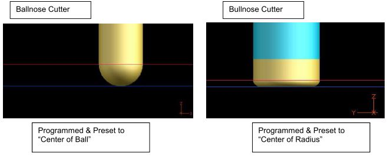

45° Nutator (3+2) Platform
1. Introduction
This guide provides the necessary technical specifications for developing a post-processor for the TarusNC control, specifically for a 3+2 high-speed mill with a 45-degree nutator head.
Post-Processor Test Kit
To ensure a rapid and successful post-processor deployment, provide the CAM vendor or developer with a "Post-Processor Test Kit." This kit is typically a .zip file containing:
- A simple 3D CAD model: A small test block or representative part with features relevant to the machine (e.g., angled holes, sloped surfaces).
- A proven .NC program: A G-code file that has been verified to run successfully on the target machine to cut that exact CAD model.
This allows the developer to program the part, generate code, and compare their output to a "known good" file, dramatically speeding up debugging.
2. Core Programming Logic
3+2 and Five Axis Milling Overview
When 3-axis contour milling needs to be done with the tool "tipped" or tilted at an angle it is usually referred to as "3+2 milling". The toolpath program is made with the cutting tool tipped at an angle and then is held there until a surface or work piece has been machined (X Y & Z axis are continuously moving, but the A & C axis are stationary). Then the tool is tipped again at a different angle to machine another area of the part with a new toolpath program.
This is an example of drilling holes with 3+2 Milling technique.

Animation: 3+2 Milling - 45° Nutator Head stationary during cutting (45-nutator-drilling.gif)
Positioning Mode (Machine vs. Part)
The control operates in two primary coordinate modes. The post-processor must be configured to output code for the "Part Coordinate System" by default.
- Part Coordinate System (
G54-G59): This is the default mode for all G-code programs. AllX,Y, andZcoordinates in a standardG00orG01block are interpreted as absolute positions relative to the active work offset (e.g.,G54), which is set by the operator. The post-processor must output all motion in this "Part" coordinate system. - Machine Coordinate System (
G53): This is the absolute machine position. Moves in this system (e.g.,N100 G53 G00 X...) ignore all work offsets. This is only used for non-cutting moves, such as sending the machine to a safe home or tool change position.
Tool Length Compensation
The control automatically applies tool length compensation at all times. The length and radius values stored in the tool registry are made modal and active immediately upon a tool change (M06 T#). There is no separate G-code command to activate or deactivate tool length compensation.
3+2 Positional Motion (Crucial Safety Logic)
All 5-axis motion is positional (3+2) only. The post-processor must ensure all A/C axis rotations are non-cutting moves. The A and C axes will clamp before any subsequent G01 cutting moves are executed.
The post-processor must be configured to follow this exact sequence:
- Retract: Retract the tool to a safe Z position (off the part surface).
- Rotate: Output a
G00rapid move containing the newAandCangles (e.g.,N100 G00 A45 C90). The axes will move and clamp. - Reposition: Output a
G00rapid move with theX, Y, Zcoordinates for the start of the cut. - Engage: Output a
G01feed move to the cutting depth. - Cut: Perform all 3-axis cutting motion.
3. File Structure & Program Format
- File Extension:
.NCor.CNC. - Block Format: Each line must begin with an
Nnumber (e.g.,N100). - One Code Per Line: G-codes and M-codes must be on their own individual lines. Do not group codes (e.g.,
G01 G54on one line is not supported).Correct Example:
N100 G54 N110 G00 X100 Y50 A0 C0 - Modal Parameters: All parameters (
X,Y,Z,A,C,F) are modal. However, output all active parameters on every motion line to avoid ambiguity and ensure correct debugging. - Comments: Comments are started with a semicolon (
;), an asterisk (*), or enclosed in parentheses( ... ).
4. 5-Axis Kinematics (45° Nutator Head)
This is the most complex part of the post-processor. The control requires the post to calculate the final A (tilt) and C (rotation) angles based on the machine's 45-degree nutator head kinematics.
Machine Kinematics & Configuration
Axis Travel Limits (Hard Numbers)
- X, Y, Z Min/Max: (e.g., -1000mm / +1000mm) - Note: These are always custom to the machine.
- A Min/Max (Tilt): (e.g., -44.9950° / +44.9950°) - Note: A-axis may not reach a full 45°.
- C Min/Max (Rotation): (e.g., 0° / +360° or -180° / +180°)
Kinematic Configuration (Example)
The most critical kinematic value required by the post-processor is the "Flange Offset" (also known as "Pivot to Flange" or "Z in A"), which is the distance from the A-axis pivot point to the spindle mounting flange.
- Flange Offset (Z in A): (e.g., 250mm)
Positional Coordinate Transformation (RTCP Logic)
When a toolpath is started, the move to the start of the program will automatically have the RTCP function active for positional moves. This is a point-to-point transformation, not continuous motion.
When the post-processor outputs a G00 block with a new 5-axis coordinate (e.g., N100 G00 X10 Y10 Z5 A45 C90), the control's RTCP feature calculates the necessary machine-axis positions for X, Y, and Z to get the tool tip to the exact X10 Y10 Z5 part coordinate, based on the new A45 C90 orientation.
YOU MUST HAVE THE GLOBAL SETTINGS SET TO "USE FILE ANGLES" FOR AUTOMATIC HEAD MOVEMENT TO TAKE PLACE DURING TOOLPATH EXECUTION.
RTCP / Coordinate Output Clarification
Crucial Note for Developers: All G-code programs must be posted with the final machine coordinates for X, Y, Z, A, and C. The post-processor must calculate the kinematic compensations for the head's pivot lengths. The TarusNC control's "RTCP" function (enabled by "Use File Angles") will then automatically apply the active tool length compensation.
Kinematic Logic (A & C "Virtual Angles")
The post must convert the CAM's tool vector (I, J, K) into the machine's A and C "Virtual Angles" based on the 45-degree head.
The C-Axis rotation "points" the tool in a direction, and the A-Axis tilts the tool.

Reference: 45° Nutator Head "Virtual Angle" Logic (45-nutator-headdirections.jpeg)
The "Virtual Angle" logic for the C-axis with A axis at 45 Degrees is as follows:
C=0points the tool toward the machine's +X axis.C=90points the tool toward the machine's +Y axis.C=180points the tool toward the machine's -X axis.C=270points the tool toward the machine's -Y axis.
Dual 5-Axis Modes
The post-processor commands 5-axis positions in two ways:
- Standard 3+2 Motion (Primary): Outputting a
G00orG01block withAandCangles (e.g.,N100 G01 X... Y... Z... A45 C90 F1000). This is the standard method for all 3+2 surface milling. - Tarus Proprietary Cycles (Secondary): The control also has special "Tarus" canned cycles (e.g.,
G482,G474) that accept a 5-axis vector usingPI,PJ,PKorA,B,Cparameters. These are also positional cycles, primarily used for hole-making operations at an angle.
5. Tooling & Compensation Logic
Tool Length and Presetting Tools
At the CNC control, the operator must set up his Tool Selector settings for a particular cutter with AT LEAST the following parameters:
- Tool Length - To the Tip of Tool
- Corner Radius - The Corner Radius of the ballnose/bullnose cutter.
These settings apply to ALL Ballnose and Bullnose cutters. Flat Endmill cutters do not need the "Corner Radius" parameter set (Corner Radius = 0).
There is NO Corner Radius parameter found in the Tool Manager for a Ballnose cutter. The CNC software allows for the radius of the ball automatically in the tool length parameter. A Flat Endmill will have a 0 in the Corner Radius field if it has a sharp/square corner.
Once the tool is installed in the spindle and the Tool Length has been calculated, the machine can be preset to the workpiece. For proper presetting technique see Ballnose Cutter Presetting for Ballnose type cutters, and Bullnose Cutter Presetting for Bullnose type of cutters.
After presetting the tool is complete, the program can now be loaded into the CNC and executed.

Reference: "Ballnose Cutter" and "Bullnose Cutter" programming logic (millingoverview5axis.jpeg)
Standard methods of programming for these types of cutters are:
- Ballnose Cutters: Programmed & Preset to "Center of Ball"
- Bullnose Cutters: Programmed & Preset to "Center of Radius"
- Flat Endmill Cutters: Programmed & Preset to "Tip of Tool"
6. Supported G Codes (Milling Only)
This list excludes all Gundrill-specific codes.
Primary Motion & Settings
| Code(s) | Description | Parameters |
|---|---|---|
G00 | Rapid Point-to-Point | X, Y, Z, A, B, C (End Points) |
G01 | Linear Feed | X, Y, Z, A, B, C (End Points), F (Feedrate) |
G02 | Clockwise Circle | X, Y, Z (End Points), I, J (Incremental Center), F (Feedrate) |
G03 | Counter-Clockwise Circle | X, Y, Z (End Points), I, J (Incremental Center), F (Feedrate) |
G04 | Pause / Dwell | P (Time. e.g., P1.5 for 1.5 seconds, P1500 for 1.5 seconds) |
G20 / G70 | Units - Inch | |
G21 / G71 | Units - Millimeter | |
G40 | Cutter Compensation Off | Must be on its own line |
G41 | Cutter Compensation Left | Must be on its own line |
G42 | Cutter Compensation Right | Must be on its own line |
G53 | Machine Coordinate System | |
G54 - G58 | Work Coordinate System 1-5 | |
G59 | Work Coordinate System | P (Coordinate system #) |
G460 | Change Cut Style | P (P1=Super Finish, P2=Finish, P3=Semi-Finish, P4=Semi, P5=Rough, P6=Drilling) |
G621-G626 | Go to User Safe Position | F (Feedrate). G621 (X), G622 (Y), G623 (Z), G624 (A), G625 (B), G626 (C) |
G631-G637 | Clear Modal Position | G631 (X), G632 (Y), G633 (Z), G634 (A), G635 (B), G636 (C), G637 (All Axes) |
Standard Canned Cycles (3-Axis)
| Code(s) | Description | Parameters |
|---|---|---|
G33 | Thread Mill | X (Center), Y (Center), Z (End), F (Feed), K (Retract), R (Rapid Pt), D (Diameter), P (Pitch), T (Taper), C (Passes), LR (Lead in/out) |
G74 | Tapping - Left Handed | X (Center), Y (Center), Z (End), K (Retract), R (Rapid Pt), P (Pitch), D (Tap Diameter) |
G77/G78 | Spot Face (CW/CCW) | X (Center), Y (Center), Z (End), K (Retract), R (Rapid Pt), F (Feed), I (Inc. Depth), J (Inc. per Rev), S (Start Dia), D (End Dia), RA (Ramp Angle) |
G82/G83 | Drill Cycle | X (Center), Y (Center), Z (End), K (Retract), R (Rapid Pt), F (Feed), J (Initial Peck), P (Peck %), I (Chip Break), H (Dwell) |
G84 | Tapping - Right Handed | X (Center), Y (Center), Z (End), K (Retract), R (Rapid Pt), P (Pitch), D (Tap Diameter) |
G85-G89 | Bore Cycles | X (Center), Y (Center), Z (End), K (Retract), R (Rapid Pt), F (Feed), J (Initial Peck), P (Peck %), I (Chip Break), H (Dwell) |
Tarus Proprietary 5-Axis Canned Cycles
These cycles perform 5-axis operations using either explicit A/B/C angles or a PI/PJ/PK vector.
| Cycle | Vector-Based Code | Angle-Based Code | Parameters |
|---|---|---|---|
| Tarus Drilling | G482 (Dwell On)G483 (Dwell Off) | G582 (Dwell On)G583 (Dwell Off) | CX,CY,CZ (Center), RT (Retract), DP (Depth), IP (Initial Peck), PP (Peck %), CB (Chip Break), DT (Dwell), F (Feed), plus PI,PJ,PK or A,B,C |
| Tarus Tapping | G474 (Left)G484 (Right) | G574 (Left)G584 (Right) | CX,CY,CZ (Center), RT (Retract), DP (Depth), DS (Start Dia), PT (Pitch), plus PI,PJ,PK or A,B,C |
| Tarus Boring | G485-G489 | G585-G589 | CX,CY,CZ (Center), RT (Retract), DP (Depth), IP (Initial Peck), PP (Peck %), CB (Chip Break), DT (Dwell), F (Feed), plus PI,PJ,PK or A,B,C |
| Tarus Thread Mill | G433 | G533 | CX,CY,CZ (Center), RT (Retract), DP (Depth), DS (Thread Dia), PT (Pitch), TP (Taper), PS (Passes), LR (Lead in/out), CL (Clearance), RH (Right/Left), IT (Int/Ext), F (Feed), plus PI,PJ,PK or A,B,C |
| Tarus Spot Face | G477 (CW)G478 (CCW) | G577 (CW)G578 (CCW) | CX,CY,CZ (Center), RT (Retract), DP (Depth), DS (Start Dia), DE (End Dia), ID (Depth Inc), IR (Radial Inc), RA (Ramp Angle), F (Feed), plus PI,PJ,PK or A,B,C |
7. Supported M Codes (Milling Only)
This list excludes all Gundrill-specific codes.
| Code | Description | Parameters |
|---|---|---|
M00 | Program Stop | |
M01 | Optional Stop / Program Pause | Displays comments on the same line (or following line) to the operator. |
M03 | Spindle On - Clockwise (CW) | S (e.g., S5000 for 5000 RPM) |
M04 | Spindle On - Counter-Clockwise (CCW) | S (e.g., S5000 for 5000 RPM) |
M05 | Spindle Off | |
M06 | Tool Change | T (Tool number from Tool Selector, e.g., T1) |
M07 | Air On | |
M08 | Coolant On | |
M09 | Air and Coolant Off | |
M30 | Program End | |
M52 | Through Spindle Coolant On | |
M53 | Through Spindle Coolant Off | |
M104 | Tool Frame On | Note: M104 is "Tool Frame On" and M105 is "Tool Frame Off (part frame on)". This controls the coordinate system reference (Tool Center Point vs. Part). Given RTCP is always on, M104 is the default for 5-axis. |
M105 | Tool Frame Off (Part Frame On) | See note for M104. |
M106 | Start Timer | |
M107 | Wait for Timer |
8. Example Programs
Example Milling Program
Below is an example file that can be used to help structure the postprocessor for your CAD/CAM system so that it outputs the toolpaths correctly for the TarusNC CNC control:
N0001G71
N0002(SAMPLE PROGRAM)
N0003(TOOL NAME : T BC D20)
N0004(TOOL NUMBER : 2)
N0005M06 T2
N0006(SPINDLE SPEED : 5000)
N0007M03 S5000
N0008G00 X-6.4960 Y6.4320 Z150.0000 A0 C0
N0009G00 X-6.4960 Y6.4320 Z137.1610 A0 C0
N0010G01 X-6.4960 Y6.4320 Z132.1610 A0 C0 F12700
N0011G01 X-6.6450 Y6.2180 Z132.1610 A0 C0 F12700
N0012G01 X-7.0170 Y5.7760 Z132.1610 A0 C0 F12700
...
N4673G01 X-66.6270 Y71.1520 Z2.8390 A0 C0 F12700
N4674G01 X-66.8750 Y71.0710 Z2.8390 A0 C0 F12700
N4675G00 X-66.8750 Y71.0710 Z150.0000 A0 C0
N4676M05
N4677M30Example 5-Axis Drilling Program (G582/G637)
This example demonstrates using G637 (Clear All Axes Modal) before a head rotation to ensure the X, Y, and Z axes are not modal. This is followed by a G582 5-axis angle-based drill cycle.
N0001(EXAMPLE 5-AXIS DRILLING)
N0002M06 T5
N0003(DRILL HOLES @ HEAD ANGLE A=45 C=0 DEGREES)
N0004G603 (GO TO +Z MACHINE LIMIT)
N0005G637 (CLEAR ALL AXES MODAL LOCATION)
N0006G00 A45 C0
N0007M03 S710
N0008G00 X-5 Y-6 Z10
N0009G01 X-5 Y-6 Z5 F100
N0010G582 CX-5 CY-6 CZ0 RT7.0 DP0.500 IP0 PP100 CB0 DT0 F4.1 A45 C0
N0011G582 CX-10 CY-8 CZ-3 RT7.0 DP0.500 IP0 PP100 CB0 DT0 F4.1 A45 C0
N0012G603 (GO TO +Z MACHINE LIMIT)
N0013M05
N0014(DRILL HOLES @ HEAD ANGLE A=22 C=90 DEGREES)
N0015G637 (CLEAR ALL AXES MODAL LOCATION)
N0016G00 A22 C90
N0017M03 S710
N0018G00 X7 Y5 Z10
N0019G01 X7 Y5 Z5 F100
N0020G582 CX7 CY5 CZ0 RT7.0 DP0.500 IP0 PP100 CB0 DT0 F4.1 A22 C90
N0021G603
N0022M05
N0023M309. Filename and Directory Requirements
The post-processor must be configured to output filenames and directories that adhere to the following rules.
9.1. Naming Rules
- Spaces or punctuation are not permitted. Use dashes (
-) if necessary (e.g.,My-New-File.NC). - Filenames must be concise and descriptive.
- Filenames must be
lowercase. - Version numbers or dates are not permitted in filenames.
9.2. Illegal Filename Characters
The post-processor must not use any of the following characters or symbols in filenames or folders:
#(pound)&(ampersand)\(back slash)/(forward slash)*(asterisk)?(question mark)- (blank spaces)
$(dollar sign)@(at sign)+(plus sign)|(pipe)- emojis
%(percent){(left curly bracket)}(right curly bracket)<(left angle bracket)>(right angle bracket)!(exclamation point)'(single quotes)"(double quotes):(colon)`(backtick)=(equal sign)- alt codes